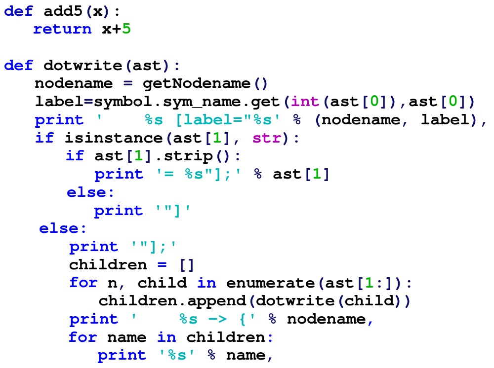
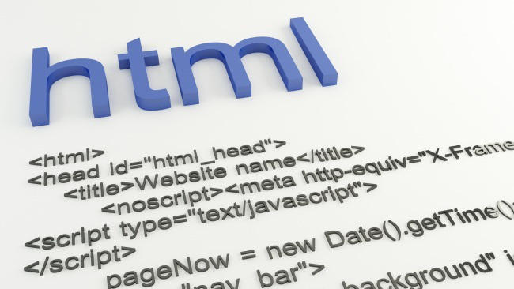
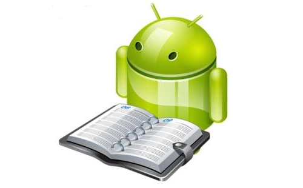

Lenguajes de programación
Aquí encontrarás en detalle todos los lenguajes de programación, para que poder aprender a programar según tus necesidades.
Introducción a los lenguajes de programación
En un inicio, desde que se inventó el primer ordenador hace más de 70 años, la tecnología ha evolucionado muchísimo,
haciéndonos cambiar nuestra vida diaria. Hace sólo 10 años que Facebook y Youtube se crearon (y empezaba a crecer su popularidad),
el sistema operativo más utilizado era Windows XP y salió a la venta por primera vez el iPhone, revolucionando el concepto de smathphone.
Y si hablamos de como ha cambiado internet, las videoconsolas...

Actualmente estamos hablando de realidad virtual, coches autónomos que se conducen solos, móviles que puedes jugar a videojuegos, realidad aumentada, utilizar twitter o navegar por la web, GPS, los mismos móviles te permiten hacer fotos, grabar vídeos, usar aplicaciones y un largo etcétera. Todo esto no hubiera sido posible sin los lenguajes de programación.
Pero ¿qué es un lenguaje de programación? Seguro que has oído hablar de Java, pero antes de ir a tanto detalle, vamos a intentar explicar la pregunta que acabamos de hacernos.Qué es un lenguaje de programación
Para explicar que es un lenguaje de programación, tenemos que pensar en programas. Explicado de una manera muy sencilla, un programa o software es un conjunto de instrucciones escritas que hacen una tarea concreta. Estas órdenes se dan de manera secuencial, una detrás de otra, y se escriben de manera que un ordenador lo pueda entender (la sintaxis debe ser correcta). Hablamos de ordenadores, pero habría que decir dispositivo (que ahora es más utilizado): un móvil, una tablet, una consola, un coche... todos usan programas para funcionar correctamente. Un ejemplo que puede entender todo el mundo sería una receta de cocina: tenemos una serie de ingredientes, y unos pasos a seguir, que se tiene que hacer en el orden correcto, hasta completarlos todos.Las instrucciones u órdenes que hemos comentado tienen que estar en un lenguaje que el ordenador entienda, y este lenguaje se llama lenguaje de programación. Existen muchos, al igual que existen muchos idiomas para que las personas nos podamos entender. Pero todos tienen una serie de conceptos comunes entre ellos. 
Conceptos para entender como funciona un lenguaje de programación
¿Qué hemos dicho hasta ahora? Que tenemos que escribir una serie de órdenes para que un dispositivo lo entienda. Estas instrucciones tienen siempre un objetivo: el tratamiento de datos. Para tratarlos, necesitamos saber que están relacionadas con:- El procesador, que es el encargado de manipular y transformar los datos.
- La memoria, que es dónde se almacenan temporalmente la información.
- Y el sistema de entrada y salida, que nos permite intercambiar datos con elementos externos. Estamos hablando de un teclado, ratón, pantalla, impresora, etc.
Tipos de lenguajes de programación
Principalmente existen dos tipos de lenguajes de programación: los lenguajes de bajo y los de alto nivel. Pero antes de explicar las diferencias que tenemos entre los dos, vamos a explicar que cosas tenemos en cuenta a la hora de escribir un programa. Para escribir un programa, se puede hacer abriendo un editor de texto cualquiera (como puede ser el bloc de notas de Windows) y escribir las sentencias correctamente. Podemos tener un fichero de texto o varios (eso dependerá de cada lenguaje y el programa que queramos hacer), y una vez hemos acabado, todo ese conjunto de ficheros de texto es el que llamamos código fuente.Ahora que ya lo tenemos, lo siguiente que se debe hacer es transformar a código máquina para que lo entienda. Esa transformación se hace mediante compilación. Si no se ha escrito algo correctamente, tendremos un error de compilación. Si la compilación es totalmente correcta, habrá creado un programa ejecutable, que funciona él solito y se puede distribuir, es decir, poner en cualquier dispositivo compatible.
Ahora que sabemos los pasos a seguir (sentencias➡️código fuente➡️compilación➡️programa ejecutable), podemos pasar a comentar los dos tipos de lenguajes.
Lenguajes de bajo nivel
En un inicio, los lenguajes de bajo nivel son los más cercanos al ordenador, por eso también se llaman lenguaje máquina. Están pensados para realizar funciones con un procesador en concreto, por lo tanto tiene la ventaja que puedes aprovechar al máximo las características de los sistemas, además de su rapidez cuando se ejecuta, pero tiene la gran desventaja que es casi imposible usarlo en distintas máquinas.¿Sabías qué los datos que utiliza un ordenador son ceros y unos? Pues así se escribe en lenguaje máquina: combinas los diferentes 0 y 1 para crear esas instrucciones para que lo entienda el hardware. Después inventaron el lenguaje ensamblador, que ya escribías instrucciones con números y letras (como puede ser mov ax, 9, int 22h o end program), reduciendo los códigos fuentes y hacer que se pudiera entender más fácilmente, y de otra forma, a la hora de hacer un desarrollo, pero todo esto eran limitaciones de estos lenguajes, así que se crearon los de alto.
Lenguajes de alto nivel
Un lenguaje de alto nivel se acerca más al lenguaje humano que al lenguaje máquina. Es por ello que son los más utilizados en la actualidad para una gran variedad de cosas. La primera ventaja es que da igual la arquitetura o el hardware del dispositivo, y se puede utilizar en diversasmáquinas mediante su compilación. De esta manera, nos podemos olvidar de como funciona el procesador, y empezar a pensar en variables, bucles, funciones y objetos. ¡De eso ya se encargará el ordenador cuando compile! Otra de las ventajas es que el código fuente es más sencillo de entender, por lo que escribir sintaxis se hace de una manera más práctica y es mucho más rápido.De ahí vienen los lenguajes de programación más utilizados y demandados: Python, Java, C o PHP son este tipo de lenguajes.
Otras clasificaciones de lenguajes
Hemos aprendido una cosa importante, qué son los tipos de lenguajes computacionales, ahora sigue otro tipo de clasificaciones que es interesante saber. Hemos dicho que el código fuente se compila, pero hay algunos en los que es posible no compilar, porque tenemos un intérprete. El intérprete no crea un programa ejecutable, lee lo escrito línea a línea, y va dando las órdenes a la máquina conforme traduce cada una de las sentencias. Para que funcione necesitamos una máquina virtual: el código crea un ejecutable genérico, y cuando un ordenador tiene esa máquina virtual, podrá ejecutarlo. así funciona JAVA, que es un lenguaje interpretado.También podemos hablar de lenguajes informáticos, que no son considerados lenguajes de programación. Por ejemplo, HTML no está considerado un lenguaje de programación (pero cuando hablamos de lenguajes web JavaScript sí), sino un lenguaje de marcas, como también puede ser XML o RSS. Un lenguaje SQL se utiliza para que los programas puedan acceder a una base de datos, como puede ser Oracle o MySQL, por eso se suelen llamar lenguajes de consulta. En informática hablamos también de lenguaje de especificación, como puede ser UML, que se utiliza para crear modelos de datos o de sistema. 
Como ves, para dar solución a cada uno de los problemas que nos podemos encontrar hoy en día (drivers de una impresora, páginas web, comunicación online en un juego multijugador), necesitamos lenguajes que hagan cosas específicas. Ahora que ya has visto como se suelen definir los tipos de lenguaje, es recomendable ver los tipos de programación, el siguiente texto, para saber las características que nos podemos encontrar a la hora de elegir el mejor lenguaje de programación para nosotros.
Tipos de programación
Cuando estamos escribiendo sintaxis, podemos hablar de diferentes tipos de programación, o dicho de otra manera, diversos paradigmas de programación. Conforme ha ido evolucionando la programación a lo largo de los años, se han creado nuevos lenguajes y maneras de programar para resolver los distintos problemas que se han encontrado en cada momento.Vamos a nombrar algunos de estos paradigmas de programación para entender la evolución de los lenguajes.
Programación estructurada
Cuando se crearon los primeros lenguajes de alto nivel, se utilizaba el salto incondicional, el famoso GOTO. El problema de usar la etiqueta GOTO es que hacía el código muy difícil de seguir, y eso ocasionaba los principales errores que podía hacer un programador informático.Para resolver esta cuestión importante, aparecieron lenguajes con la posibilidad de realizar las estructuras de control y pequeñas subrutinas: había nacido la programación estructurada.
Programación modular
Una vez aparecieron los lenguajes que usaban programación estructurada, los problemas para resolver computacionalmente se hicieron más grandes y complejos (resolver partidas de ajedrez, manejar millones de datos, etc.). La solución pasó por dividir un problema grande en pequeños problemas para facilitar su resolución.Así es mucho más fácil resolver cada problema pequeño o módulo es más simple que todo el conjunto, hace una tarea específica y se necesitan entre ellos para que funcione. Estos módulos suelen llamarse funciones o procedimientos, así que los lenguajes que usan la programación modular suelen tener estas opciones a la hora de programar.
Programación orientada a objetos
La programación orientada a objetos se creó para poder encapsular el tratamiento de datos (que recordemos, siempre es el objetivo de la programación). De esta manera, empezamos a agrupar código en bibliotecas, librerías o componentes, haciendo una caja negra dónde podemos usar cada biblioteca sin importar como está hecho por dentro, mientras haga lo que tenga que hacer.Hablar de POO son las siglas de programación orientada a objetos), implica conocer nuevos conceptos que no se usan en otros tipo s de programación. Estos son:
- La herencia, que permite aprovechar las características de un objeto a otro que estamos creando.
- La abstracción, dónde podemos aislar un objeto o elemento de los demás. Lo que comentábamos de la caja negra.
- El polimorfismo, que es la posibilidad de una función o propiedad pueda llamarse de la misma manera en distintos objetos y que cuando lo usemos sepa a quién nos estamos refiriendo.
- El encapsulamiento, que es la capacidad de ocultar algunos datos que no nos interesa que se acceda (podemos elegir que solo se lea ese dato, pero no se modifique).
Los objetos son nuestros vencedores de los lenguajes más modernos, por las posibilidades que nos ofrece en todos los ámbitos tecnológicos.
Lenguajes de programación más usados en 2017
¿Cómo podemos saber cuales son los lenguajes de programación más utilizados actualmente? Si miramos las últimas noticias del índice TIOBE, que nos ofrece un ranking basado en varios parámetros, como el número de búsquedas que se hacen en Google, Bing, etc. Se suele utilizar como referencia para saber los lenguajes de programación más utilizados en el mundo. Veamos una lista del top 10 se actualiza cada mes, y para el año 2017 sería:- Java.
- C.
- C++.
- C#.
- Python.
- PHP.
- Visual Basic .NET.
- JavaScript.
- Delphi.
- Perl.
Un estudio que ha hecho RedMonk dónde hace un análisis de los lenguajes de programación que se usan en estos dos lugares: si hay proyectos, preguntas, respuestas y demás, significa que este lenguaje se está moviendo y que todavía está vivo. Otra lista de los más populares, según estas dos webs son:
- JavaScript
- Java
- Python
- PHP
- C#
- C++
- CSS
- Ruby
- C
- Objective-C
Cómo puedes comprobar, los dos rankings se parecen bastante, y puedes ver una serie de lenguajes que llevan utilizándose de manera destacada durante muchos años, como puede ser Java (qué según parece este es el más importante ), JavaScript (sobretodo para páginas web) Python o C#. Puede sorprender que no esté Android, para hacer aplicaciones móviles, pero es porque es considerado como lenguaje Java, o cualquier variedad de Basic, que se usaba mucho hace unos años.
Lenguajes de programación mejor pagados
Hemos visto un análisis de los lenguajes de programación más utilizados en 2017, pero te preguntarás ahora mismo: ¿cómo puedo saber si son los lenguajes mejor pagados? En general no tiene porqué: lo más habitual es que algunos lenguajes se paguen más, porque estas herramientas pertenecen a un sector muy concreto, como puede ser Objective-C (solo vale para hacer aplicaciones en dispositivos MAC), Ruby, MatLab o BASH (para entornos Unix). Aunque todo esto depende mucho de cada país (varía bastante en distintas partes del mundo) y su uso en él: por ejemplo, ABAP es mucho más popular en Alemania porque SAP es un producto alemán (un software de gestión de empresas, normalmente se llama ERPs).También depende mucho la experiencia que puedas aportar en el desarrollo, si eres un programador junior (un novato, vamos) ganarás menos que un programador senior, un analista o un jefe de proyectos. Conforme según vayan pasando los años, es muy posible que vayas cambiando de rol a la hora de programar y te dediques a diferentes gestiones, así que decidir el lenguaje de programación tendrá menos peso respecto al tipo de trabajo al que te dediques.
Programas de programación
Tal y como hemos comentado, necesitamos crear código fuente para poder compilar y crear un ejecutable. Para escribir código fuente se puede usar de muchas maneras, existe una gran variedad de editores de texto para hacerlo.Por ejemplo, recomiendo usar editores de texto como Notepad++ (los editores de texto son aplicaciones que sólo sirven para escribir texto, pero algunas como las que comentamos tienen opciones avanzadas para programadores) porque facilita escribir código eligiendo el lenguaje de programación que quieres utilizar. Es muy útil para HTML, Perl, JavaScript, CSS o Java. Aunque últimamente estoy probando una nueva, de las muchas herramientas que puedes encontrar, por mi cuenta: Visual Studio Code. Usar un software u otro es lo de menos, lo importante es que facilite la vida a los desarrolladores.
Después existen otros editores para lenguajes específicos. Por ejemplo, para el lenguaje de programación Python es muy recomendable usar PyCharm, ya que es una herramienta específica para programar en este lenguaje.
Aparte de los editores, también tendríamos que hablar de IDEs. Un IDE es un entorno de desarrollo integrado, es decir, no solo podrás escribir código, sino que también podrás compilar, depurar, crear un GUI (interfaz gráfica), acceder a librerías del lenguaje... Los IDEs son aplicaciones específicas, por ejemplo: para el lenguaje Java, los IDEs más populares son Eclipse o NetBeans, para C Sharp suele utilizarse la plataforma de Microsoft Visual Studio .NET. En la actualidad, los programadores usan los IDEs, porque son preferibles que cualquier otro software.
Como ves, una vez hayas elegido el lenguaje de programación, sea cúal sea, luego tendrás que decidir cual es el programa para poder programar que te resulte más eficaz.
Cómo aprender a programar desde cero
Si te preguntas que lenguaje de programación aprender, o cómo aprender siendo un principiante, lo primero es decidir a que quieres orientarte. Es muy diferente aprender a hacer videojuegos, o valorar cual es el lenguaje más destacado para páginas web, que tu motivación sea buscar cuales son los lenguajes de programación mejor pagados en el mundo del software, o que quieras desarrollar una aplicación para dispositivos móviles. Cuando estás empezando, hay que pensar en que rama te quieres especializar, dicho de otra forma, va a ser muy difícil que quieras abarcar a todas, así que haz el análisis en este punto antes de continuar (y no te dejes llevar por la última y nueva tecnología que tú has oído en las noticias). Hay varias formas de aprender a programar gratis. Esta son unas cuantas:
- Buscar manuales o libros de programación. El catálogo más extenso que puedes encontrar de manuales gratuitos de programación en internet es el de OpenLibra. Tiene muchas más categorías, sobretodo busca la lista de software en español, pero para aprender a programar tienes casi 1000 libros ordenados en diferentes lenguajes.
- Cursos de lenguaje de programación. Si lo tuyo no es leer documentos, entonces te recomiendo que le eches un vistazo a la plataforma Udemy. Los cursos son en formato vídeo, y puedes encontrar de todo (en español hay una gran variedad): cursos de programación fácil, avanzados o orientados a tecnología: lenguaje de programación Python, programación en c, lenguajes de programación web, aprender Java, etc...
- Carrera universitaria: Si no buscas lo gratis, encuentra una universidad que te ofrezca un título homologado y luego conocer en que te puedes especializar. A nivel de formación general, es de las mejores, sobretodo si buscas tu primer empleo.